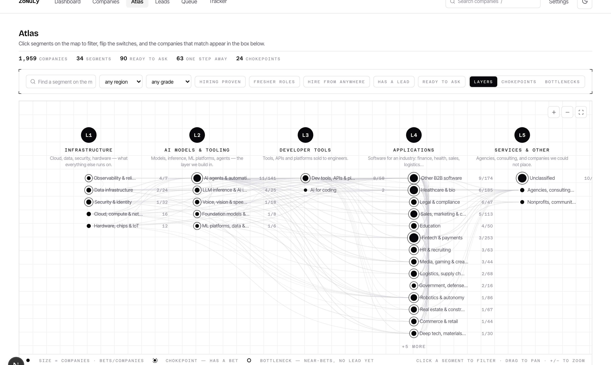
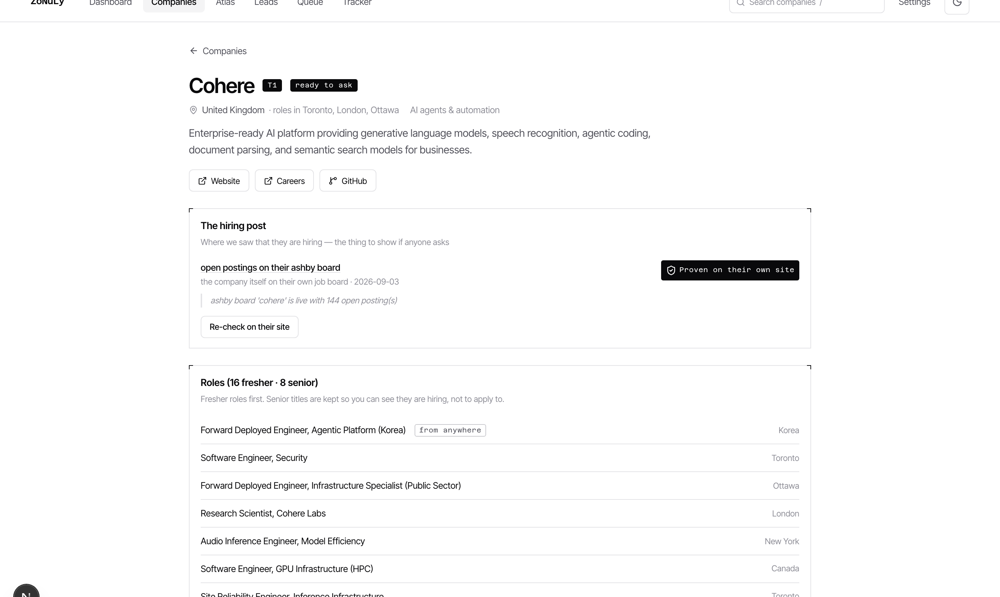

A portal application is one of 800. A referral from an engineer puts you in a stack of ten. ZoNuLy finds the funded startups nobody has heard of yet, proves they are hiring, finds the engineers who can refer you, and writes the ask — then stops for your approval.
Funded startups post on their own careers page and wait. By the time an aggregator lists the role, hundreds have applied.
"AI Engineer" spans eight years of ML to founding-engineer-for-a-strong-student. Only reading the JD against the résumé tells you which.
A portal submission is one of 800. A referral from an engineer, even a weak one, puts you in a stack of ten.
Find a person, their role, their email, their work; write something that isn't a template; send; follow up; track. Twenty minutes each — and there is coursework.
Search, filtering, drafting and follow-up are machine work. Human judgement matters at exactly one moment: "yes, send that to that person."
a year, all-in
and it is a rounding error to them
Recently funded startups — seed to Series B — with money, a role to fill, and no time. They hire remote from anywhere, no visa needed.
Google, Microsoft, Amazon and the household names: hyped, oversubscribed, DSA-gated. Thousands of applicants per role. Not where the odds are.
US / UK / EU companies hiring remote from India at any well-paid local rate, and Indian companies on-site at ₹30 L+. Every company gets an honest grade — a low grade decides ordering, never whether we try.
Funded startups from the YC directory, company search, Hacker News and X hiring posts. Hyped names rejected by name.
Every claim checked against the company's own job board or careers page. Unbacked claims are labelled, never repeated.
Every open role, fresher roles first, remote-from-anywhere flagged from the posting's own words.
Stated pay, else the Pay Power benchmark from funding, recency, team size and valuation — shown as an estimate.
Engineers who commit to the company's public repos, founders, EMs — with verified emails, ranked by who can refer.
One honest email per person, personalised from what they actually built. Nothing invented.
The review queue is the only path to send. Ten seconds per email; the other nineteen minutes are done.
From your own Gmail, 25 a day, spaced. Replies classified, one follow-up, never two.
The 25-a-day cap is the real ceiling — so everything upstream is about spending 25 emails well: the right company, the right person, the right sentence.
| Band | Score | Rule |
|---|---|---|
| Pays | 100 | a posting states ≥ ₹30 L — they wrote the number |
| Deep pockets | 85 | $10M+ in 24 months, Series A+ in 30, or valued ≥ $50M |
| Funded | 65 | $3–10M in 30 months, or a YC batch with a team of 10+ |
| Thin | 30 | under $2M, pre-seed, or the raise is stale |
| Unknown | 0 | nothing found — needs research, not an email |
"raised seed $12M 8 months ago, US HQ — able to pay a $40k remote engineer without noticing"

The Atlas. Five industry-chain layers, 34 market segments sized by companies. Click segments, flip switches — hiring proven, fresher roles, hire from anywhere, has a lead — and the matching companies appear below.

One company, one page. Who they are and how they started · the hiring post on record (who posted it, where) · roles, fresher first · the leads to reach with a Draft button · Pay Power with its sentence.
Python 3.12 · SQLite · FastAPI. Every stage commits per item, so a kill loses nothing and a rerun resumes. A knowledge graph (8,000+ nodes) records every decision and the evidence behind it.
YC directory · Greenhouse / Lever / Ashby boards · Hacker News · X hiring posts · the company's own site and About page · GitHub commit history · Exa company index. No LinkedIn session, ever.
Free models through OpenRouter, behind a cost ledger and daily caps. The model reads text we fetched and returns fields with the quote they came from; a field without its quote is dropped.
Next.js dashboard: Atlas, Companies, Leads, review Queue, Replies, Tracker. Global search, serial numbers, one-click drafts.
Docker image on Railway (API, read-only public mode with masked emails) and Vercel (dashboard). Same image runs the nightly passes on any always-on box.
₹0 a month to run. The only paid key is a $10 search credit that covers ~1,000 company lookups. GitHub, X and every company site are free.
Open the app once a day. Overnight it found companies you had never heard of, proved they are hiring, graded what they pay, found the engineers who can refer you and wrote the emails. Read the queue, fix the lines that don't sound like you, approve. Ten minutes.